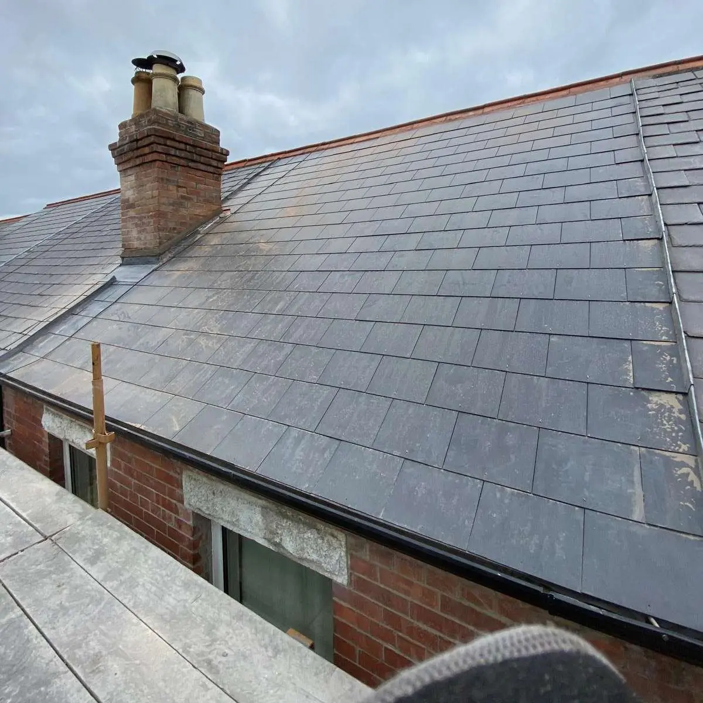

Home/About
Roofing Services in Dublin That You Can Count On
We take great pride in our workmanship, attention to detail and commitment to customer satisfaction.

Who we are
A Reliable Team of Roofing Experts
Whether you are in the heart of Dublin City or anywhere across the county, we are your local roofing specialists: expert repairs, replacements and maintenance, with fast, friendly and affordable service.
As a small team of expert tradesmen we pride ourselves on a first-class job done in a mature, friendly manner. We keep you informed at every step, and nothing happens on your property without your say-so.
We are based in Dublin and our work covers roof repairs, new roof installation, fibreglass roofing, flat roof repairs, tile and slate roofing, chimney repairs, dry verge and dry ridge systems, and roof cleaning. We believe no job is too small.
What began as a one-person business has grown through consistent quality and reliability: high-grade materials, careful supervision and thorough, transparent processes.
Schedule a ServiceSkilled professionals
A dedicated, well-qualified team. From minor repairs to major projects, the workmanship is the same.
Years of experience
Many years in the trade across Dublin, on every common roof type and material.
End-to-end service
One contractor for the whole roof, so you are not chasing different trades for different tasks.
Testimonials
What Our Customers Say
The best people to speak for our work are the people we have done it for.
Complete new roof
“Roof Repairs Dublin did an excellent job replacing our roof. They were always on time, fixed any problems that arose in a very timely manner and always tidied up after they left. After spending several weeks researching and finding a roofer, we are very happy with the decision to go with Roof Repairs Dublin.”James, Dublin
New flat roof
“An excellent job done. All the team from Roof Repairs Dublin were friendly and efficient, I’m very happy with the end result.”Mark, Swords
Roof overhaul and chimney repointed
“Arrived on time. They gave good honest advice on the best options for our roof. All the workmen were friendly and polite, kept the work area clean and tidied everything away after themselves. Would definitely recommend to all my friends and family.”Mary, Lucan
New flat roof on garage and vent tiles
“They turned up at 8.30 am as agreed and were extremely tidy, replacing the flat roof on my garage, and came back the following day to fit the vent tiles they recommended. The damp in the loft has already started to clear. Extremely pleased and would highly recommend them.”Gerry, Blanchardstown
How Can We Help?
Talk to the team today and get a free, no-obligation quote.